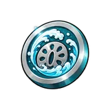
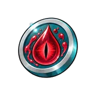
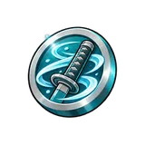

Lower Moon Guard (gate boss) Sovereign
Beat it 5 times for the last gate mission. It never hits back. Every kill drops 3–8 Hero Tokens.
World 2
Wisteria Ridge is World 2. Finish all gate missions in World 1 to unlock it.
| Enemy | Tier | Type | HP | Coins | XP |
|---|---|---|---|---|---|
| Lesser Demon | Recruit | Enemy | 31.25M | 500 | 7.5 |
| Night Stalker | Fighter | Enemy | 421.87M | 1K | 8.25 |
| Blood Adept | Veteran | Enemy | 5.69B | 1.5K | 9.07 |
| Drum Demon | Champion | Enemy | 76.88B | 2K | 9.98 |
| Spider Kin | Overlord | Enemy | 1.03T | 2.5K | 10.98 |
| Lower Moon Guard | Sovereign | Gate boss | 14.01T | 3K | 12.07 |
| Upper Moon Sentinel | Godkiller | Secret boss | 3.55Qn | 7K | 30.19 |
| Pale Lord Muzaki | Godkiller | Sword boss | 189.17T | 3.5K | 13.28 |
Beat it 5 times for the last gate mission. It never hits back. Every kill drops 3–8 Hero Tokens.
Hidden on the map and far tougher than anything else here, with the HP of a Veteran enemy from World 4. You don't need it to unlock the next world. It has a 1% chance per kill to drop the Red Emperor aura (+10% damage). Every kill also drops 3–8 Hero Tokens and 8 Forge Core.
This boss waits on its own arena, and the entrance is on the world map. It fights back: a circle warns you 1.4 seconds before each hit, and it strikes every 4 seconds. Step out of the circle to dodge, and keep away from its 4 rotating beams. It is not part of the gate missions. It drops swords: Trainee Blade (40%), Nichirin Saber (12%), Breath Edge (3%). Every kill also drops 3–8 Hero Tokens and 2 Forge Core, with a 40% chance of rune fragments.
| Enemy | Tier | Kills needed |
|---|---|---|
| Lesser Demon | Recruit | 25 |
| Night Stalker | Fighter | 20 |
| Blood Adept | Veteran | 15 |
| Drum Demon | Champion | 10 |
| Spider Kin | Overlord | 8 |
| Lower Moon Guard | Sovereign | 5 |
Finish all 6 missions, in any order. Reward: +5% energy, +2% damage.
| Name | Kind | Boosts | Paid with | Token dropped by |
|---|---|---|---|---|
| Breath Style | Token gacha | Energy |  Breath Style Token | Recruit Fighter |
| Demon Blood | Token gacha | Energy |  Demon Blood Token | Veteran Champion |
| Total Concentration | Upgrade (60 levels, up to ×1.6 damage) | Damage |  Total Concentration Token | Overlord Sovereign Godkiller |
 Kame Foothills
Kame Foothills Leaf Outskirts
Leaf Outskirts Reaper Court
Reaper Court Grand Shore
Grand Shore Wall Frontier
Wall Frontier